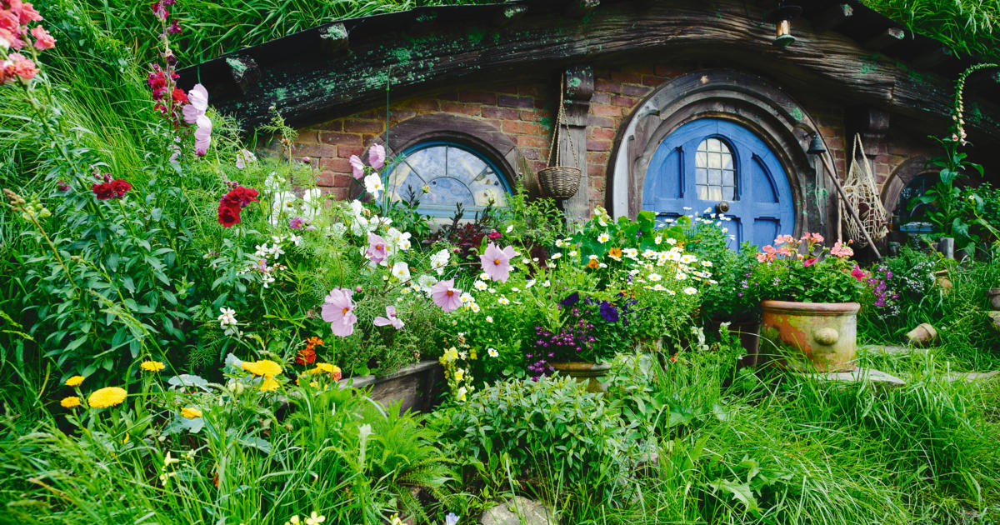
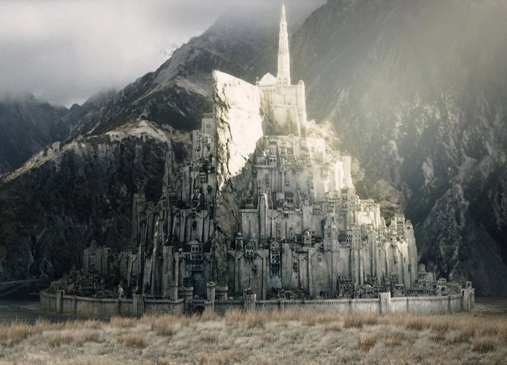

Biography:
In this section you can find about the life of the author of Middle-Earth: J.R.R.Tolkien. You will dive into his life finding out who he was, discovering his childhood and youth, learning about his involvement in the Great War, experiencing how he created the world of the Lord of the Rings and realising what was more important to him: his family.
We encorage you to read this article to understand how this world was created and why.
Portfolio:
In this section you can find multimedia archives about Middle-Earth to help you dive into the world thanks to images and videos of The Lord of the Rings motion picture.
 
Contact:
In this section you can contact us to ask for more information, to make a suggestion, to repport an error or for whatever you like!